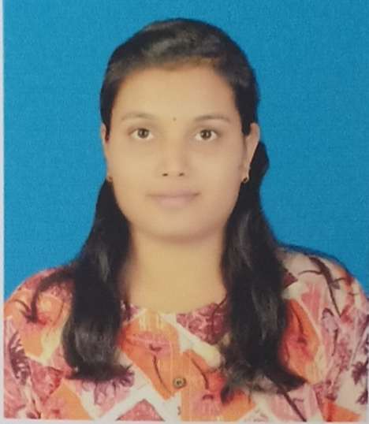

Name: Tejashri Avinash Bhalerao.
E-mail: tejashriab@gmail.com
Mobile: +918381061780
To Fulfill my dream of becoming a successful computer engineer And also to excel in my choosen field in a job both challenges and inspire me to work with best of my abilities.
| Sr. No. | Qualification | School/College | University | Year | Percentage |
|---|---|---|---|---|---|
| 1. | SSC | Om Gurudev Secondary Gurukul,Kokamthan | Pune | 2015-16 | 82.80% |
| 2. | Diploma | K K Wagh Women's Polytechnic,Nashik | MSBTE | 2018-19 | 81.88% |
| 3. | SE | KBTCOE,Nashik | SPPU | 2019-20 | 75.00% |
I hereby declare that the information furnished above is true to best of my knowledge.